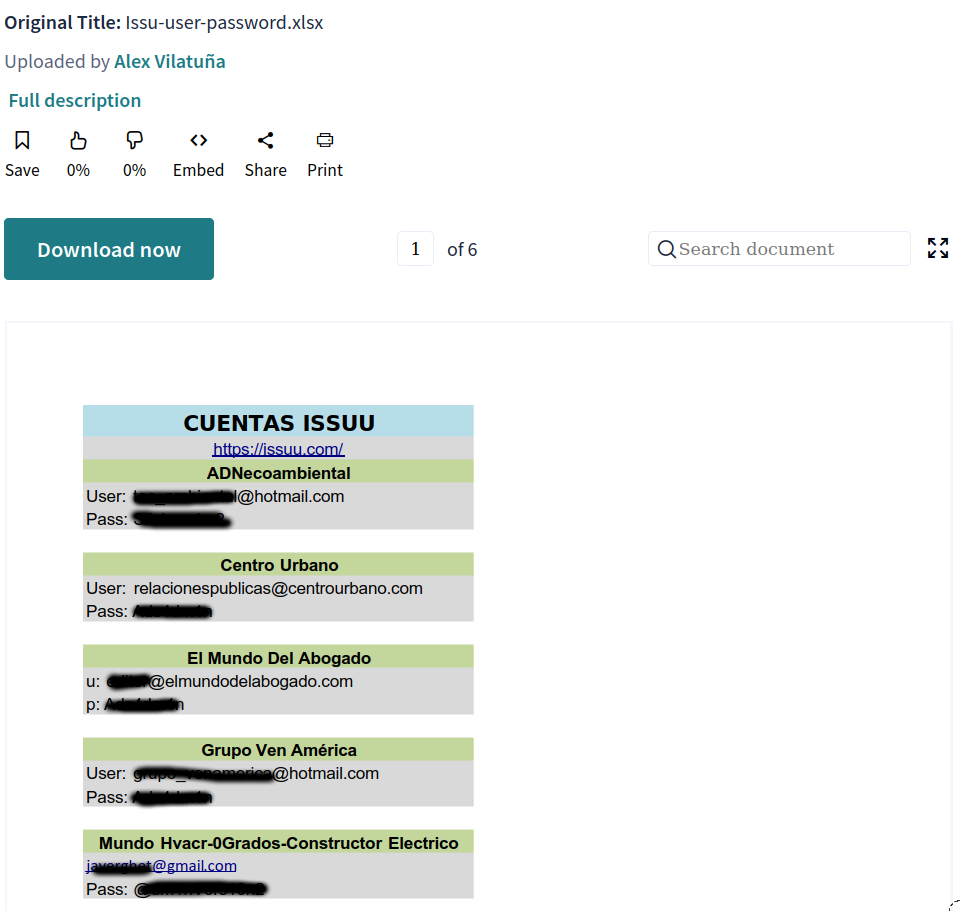

Scribd es un herramienta en linea que nos da la posibbilidad de acceder a infinidad de documentos o libros, como herramienta de aprendizaje me ha parecido siempre imprescindible, tiene una enorme cantidad de recursos. Sin embargo tiene una funcionalidad muy llamativa, si quieres obtener un documento de manera gratuita tienes la opcion de subir otro documento, la condicion es que el documento que subes no este en la plataforma con anterioridad, esto ha llevado a mucha gente a subir documentos privados, corporativos, con informacion confidencial, etc. Una muestra de ello es la siguiente imagen:

Aunque esta publico prefiero ocultar la informacion, lo interesante es la forma en la cual puedes encontrar esta informacion, con un simple google hacking site:scribd.com "user" "password" bueno pues para automatizar un poco este trabajo y no usar las alertas de google he decidido crear un small script, que si quieres puedes agregar a tu lista de procesos y usar palabras clave de tu empresa, no te recomiendo buscar passwords ni usuarios reales de tu directorio activo, recuerda que google almacena todas las busquedas, pero si puedes usar palabras o nombres de sistemas que solo usas en tu empresa, inclusive puedes usar una honeypot account como termino de busqueda.
Bueno vamos a la herramienta:
git clone https://github.com/skyg4mb/scribdsearch.git
cd scribdsearch
pip3 install -r requirements.txt
Una vez estan instalados los requerimientos se deben tener en cuenta los siguientes ficheros:
-
log.txt es el fichero de salida, todos los hallazgos de la busqueda apareceran almacenados en este archivo.
-
searchfile.txt En este fichero colocas los parametros que buscara el script, aqui estan las palabras clave de las que hablamos anteriormente.
Por ultimo la ejecucion del script es muy simple, puedes agregarlo a un demonio a ejecutarse todos los dias:
python3 scribdsearch.py
Saludos Compas….